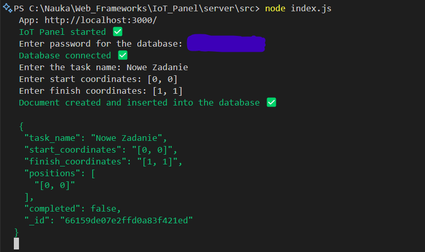
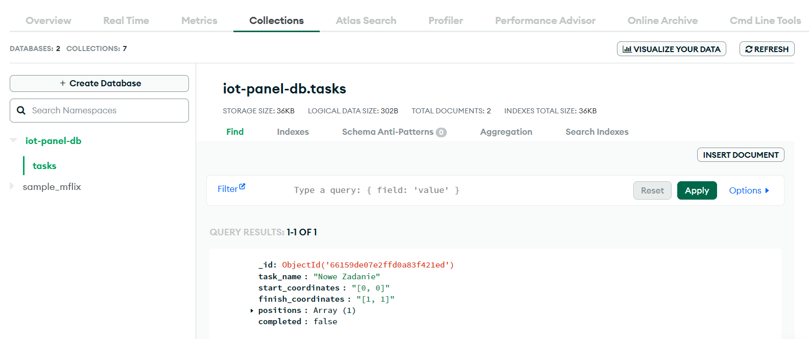

W ramach realizacji zajęć wybrałem ścieżkę MongoDB Node.js Developer Path, ponieważ wykorzystuję tą technologię w pracy i jestem z nią zaznajomiony. Zdobyte dzięki temu kursowi doświadczenie postanowiłem wykorzystać w praktyce, dodając bazę danych MongoDB do realizowanego obecnie projektu wykorzystującego Node.js jako backend.
Celem projektu jest stworzenie aplikacji do obsługi własnoręcznie tworzonego autonomicznego robota mobilnego. Istotną rolę w projekcie pełnią zadania, czyli obiekty reprezentujące przejazd pojazdu z punktu początkowego do celu określonego przez użytkownika. Do realizacji tego projektu dobrze nadaje się baza MongoDB, oferuje ona dokumentową reprezentację danych. Pomiędzy obiektami nie występują powiązania, więc baza danych nie musi być relacyjna.
Realizacja kursu pozwoliła mi przede wszystkim uzyskać praktyczne umiejętności, pozwalające na:
Wymienione techniki zostały w praktyczny sposób wykorzystane w projekcie. Skorzystałem z darmowej wersji bazy MongoDB i wdrożyłem ją w aplikacji. Do zarządzania bazą w aplikacji NodeJS niezbędne są trzy elementy:
// * Global variables:
const dbname = 'iot-panel-db';
const collection_name = 'tasks';
let client;
let collection;
let uri;
Aby przetestować postawowe funkcje bazy danych, stowrzyłem prostą funkcję setupDB, mającą na celu nawiązanie łączności z bazą z poziomu aplikacji oraz dodanie do niej rekordu.
// * Main function:
const setupDB = async () => {
await enterPassword();
// Client initialization (only one instance):
client = new MongoClient(uri);
collection = client.db(dbname).collection(collection_name);
await connectToDatabase();
createDocument().then((document) => {
collection.insertOne(document);
const documentString = JSON.stringify(document, null, 2);
logWithColor(`Document created and inserted into the database ✅ \n\n ${documentString}`, 'green');
});
}
Operacje odbywają się sekwencyjnie. Po wprowadzeniu przez użytkownika hasła do bazy danych tworzony jest nowy klient oraz kolekcja. Następnie użytkownik wprowadza kolejne dane konieczne do utworzenia nowego dokumentu, a następnie jest on dodawany do kolekcji.

Dodane dokumenty można przeglądać i modyfikować z poziomu panelu użytkownika MongoDB. Każdy nowy dokument otrzymuje unikalne _id, tworzone automatycznie przez MongoDB.

Kurs MongoDB pozwolił mi przede wszystkim zdobyć praktyczne umiejętności przydatne podczas tworzenia aplikacji internetowych. MongoDB oferuje bardzo wiele możliwości operacji na dokumentach. Pomimo że nie wykorzystałem na razie wszystkich z nich, to po zapoznaniu się z nimi wpadłem na pomysł kilku różnych opcji rozwoju projektu (np. wykorzystanie agregacji do tworzenia panelu statystyk).